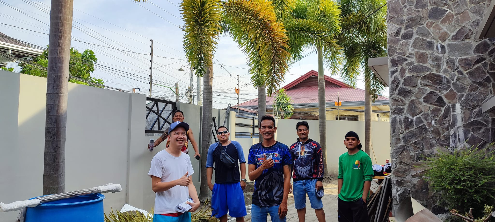

<section id="portfolio" class="portfolio section">
  <div class="container portfolio__inner">
    <header class="portfolio__header">
      <h2>Our Work</h2>
      <p class="portfolio__blurb">A selection of recent projects demonstrating reliability, attention to detail, and results.</p>
      <div class="portfolio__filters" aria-label="Filter projects">
        <label class="sr-only" for="pfProject">Project</label>
        <select id="pfProject" class="pf-select" aria-label="Project">
          <option value="all">All Projects</option>
          <option value="fence">Electric Fence</option>
          <option value="gate">Automatic Sliding Gate</option>
        </select>

        <label class="sr-only" for="pfDate">Year</label>
        <select id="pfDate" class="pf-select" aria-label="Year">
          <option value="all">All Years</option>
          <option value="2025">2025</option>
          <option value="2024">2024</option>
        </select>

        <label class="sr-only" for="pfLocation">Location</label>
        <select id="pfLocation" class="pf-select" aria-label="Location">
          <option value="all">All Locations</option>
          <option value="metro">Metro Manila</option>
          <option value="prov">Provincial</option>
        </select>
      </div>
    </header>

    <div class="portfolio__grid" aria-live="polite">
  <article class="pf-card" tabindex="0" data-project="fence" data-date="2025-06" data-loc="metro" data-title="Marketing website refresh" data-tags="Electric Fence • Metro Manila" data-desc="A fast, accessible marketing site with improved conversion and Core Web Vitals.">
        
        <div class="pf-card__meta"><span>Web</span></div>
        <h3 class="pf-card__title">Marketing website refresh</h3>
      </article>

  <article class="pf-card" tabindex="0" data-project="gate" data-date="2025-04" data-loc="prov" data-title="Mobile app MVP" data-tags="Automatic Sliding Gate • Provincial" data-desc="Clickable prototype to validate flows quickly with users.">
        
        <div class="pf-card__meta"><span>Mobile</span></div>
        <h3 class="pf-card__title">Mobile app MVP</h3>
      </article>

  <article class="pf-card" tabindex="0" data-project="fence" data-date="2024-11" data-loc="metro" data-title="Brand identity kit" data-tags="Electric Fence • Metro Manila" data-desc="A minimal brand starter kit with a clear, modern palette.">
        
        <div class="pf-card__meta"><span>Brand</span></div>
        <h3 class="pf-card__title">Brand identity kit</h3>
      </article>

  <article class="pf-card" tabindex="0" data-project="gate" data-date="2024-09" data-loc="prov" data-title="Dashboard UI" data-tags="Automatic Sliding Gate • Provincial" data-desc="Compact dashboard with focused visuals and keyboard-friendly interactions.">
        
        <div class="pf-card__meta"><span>Web</span></div>
        <h3 class="pf-card__title">Dashboard UI</h3>
      </article>

  <article class="pf-card" tabindex="0" data-project="fence" data-date="2025-02" data-loc="prov" data-title="Packaging mockups" data-tags="Electric Fence • Provincial" data-desc="Clean, consistent packaging mockups for an e-commerce refresh.">
        
        <div class="pf-card__meta"><span>Brand</span></div>
        <h3 class="pf-card__title">Packaging mockups</h3>
      </article>

  <article class="pf-card" tabindex="0" data-project="gate" data-date="2024-07" data-loc="metro" data-title="Onboarding flow" data-tags="Automatic Sliding Gate • Metro Manila" data-desc="Frictionless onboarding flow with progressive disclosure.">
        
        <div class="pf-card__meta"><span>Mobile</span></div>
        <h3 class="pf-card__title">Onboarding flow</h3>
      </article>

  <article class="pf-card" tabindex="0" data-project="fence" data-date="2025-05" data-loc="metro" data-title="Landing page A/B" data-tags="Electric Fence • Metro Manila" data-desc="Tested variants to maximize signups and readability.">
        
        <div class="pf-card__meta"><span>Web</span></div>
        <h3 class="pf-card__title">Landing page A/B</h3>
      </article>

  <article class="pf-card" tabindex="0" data-project="gate" data-date="2024-03" data-loc="prov" data-title="Icon set" data-tags="Automatic Sliding Gate • Provincial" data-desc="Custom icon family with consistent stroke and sizing.">
        
        <div class="pf-card__meta"><span>Brand</span></div>
        <h3 class="pf-card__title">Icon set</h3>
      </article>

  <article class="pf-card" tabindex="0" data-project="fence" data-date="2024-12" data-loc="metro" data-title="Docs portal" data-tags="Electric Fence • Metro Manila" data-desc="Developer-friendly docs portal with snappy search.">
        
        <div class="pf-card__meta"><span>Web</span></div>
        <h3 class="pf-card__title">Docs portal</h3>
      </article>

  <article class="pf-card" tabindex="0" data-project="gate" data-date="2025-01" data-loc="prov" data-title="Wearable companion" data-tags="Automatic Sliding Gate • Provincial" data-desc="Lightweight companion app for a wearable device.">
        
        <div class="pf-card__meta"><span>Mobile</span></div>
        <h3 class="pf-card__title">Wearable companion</h3>
      </article>

  <article class="pf-card" tabindex="0" data-project="fence" data-date="2024-05" data-loc="prov" data-title="Analytics snapshots" data-tags="Electric Fence • Provincial" data-desc="Digestible analytics snapshots for quick decisions.">
        
        <div class="pf-card__meta"><span>Web</span></div>
        <h3 class="pf-card__title">Analytics snapshots</h3>
      </article>

  <article class="pf-card" tabindex="0" data-project="gate" data-date="2024-10" data-loc="metro" data-title="Design system" data-tags="Automatic Sliding Gate • Metro Manila" data-desc="A small design system for consistent, scalable UI.">
        
        <div class="pf-card__meta"><span>Brand</span></div>
        <h3 class="pf-card__title">Design system</h3>
      </article>

  <article class="pf-card" tabindex="0" data-project="fence" data-date="2024-08" data-loc="prov" data-title="Offline-first notes" data-tags="Electric Fence • Provincial" data-desc="Fast notes app with offline support and sync.">
        
        <div class="pf-card__meta"><span>Mobile</span></div>
        <h3 class="pf-card__title">Offline-first notes</h3>
      </article>
    </div>

    <nav class="portfolio__pager" aria-label="Project pages"></nav>

    <aside class="portfolio__details" aria-label="Project details">
      <h3 class="details__title">Select a project</h3>
      <p class="details__tags">Tags will appear here</p>
      <p class="details__desc">Click a tile to view a brief summary.</p>
    </aside>
  </div>
</section>
